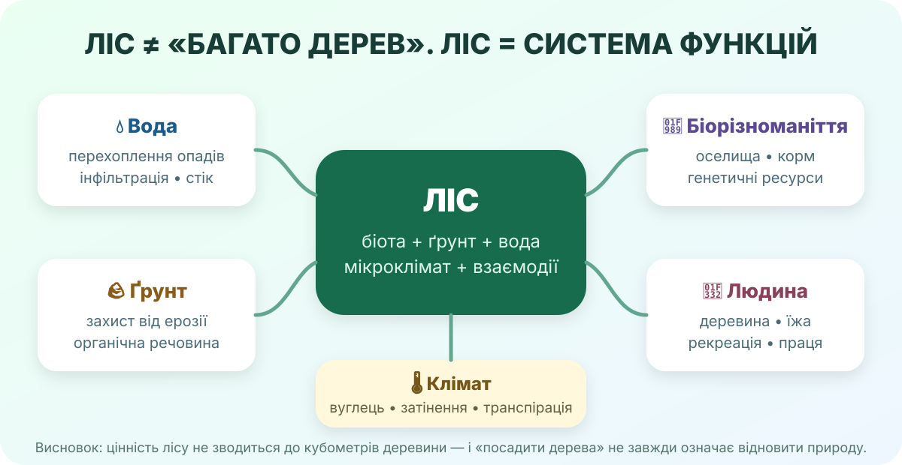

0. Дилема — 3 хв
Варіант А
100 га природного степу з ковилою, комахами-запилювачами й степовими птахами.
Варіант Б
Ті самі 100 га засадити деревами, щоб «збільшити лісистість».
1. Розкладіть цінність лісу на функції — 5 хв

Крони, підстилка й ґрунт змінюють шлях води: частина опадів перехоплюється, частина повільніше стікає й просочується.
Корені й підстилка зменшують ерозію, особливо на схилах і в ярах.
Ліс накопичує вуглець у біомасі й ґрунтах, затінює поверхню, транспірує воду.
Ліс — це простір існування великої кількості видів, а не просто набір стовбурів.
Деревина, гриби, ягоди, лікарська сировина, мисливські та інші ресурси.
Відпочинок, туризм, психофізичне відновлення, освіта та наука.
Клацніть 3 функції, які Ви вважаєте найкритичнішими для своєї області. Потім спробуйте пояснити, чому саме ці, а не «бо вони хороші».
2. Лісова Україна — але нерівномірно — 6 хв
загальна площа лісових ділянок України за даними Держлісагентства.
лісистість України. Ліси концентруються переважно на Поліссі та в Карпатах.
лісистість степової природної зони — значно нижча, ніж у Карпатах (42%) чи на Поліссі (26,8%).
лісів відновлено у 2025 році в системі Держлісагентства.
Держлісагентство: характеристика лісівGlobal Forest WatchNASA Worldview
3. ПЗФ своєї області: знайдіть великий об’єкт — 5 хв
створений 2010 року; площа 78 126,92 га. Охороняє типові й унікальні степові та водні комплекси північно-західного узбережжя Азовського моря.
Парк розташований на тимчасово окупованій території. Це означає, що «карта природного ресурсу» сьогодні одночасно є картою екологічних ризиків війни.
4. Головне дослідження: чи треба збільшувати лісовий масив в Асканії-Новій? — 7 хв

Фото степового ландшафту. Працюємо не з емоцією «дерева красивіші», а з відповідністю екосистеми місцю.
Сценарій 1. Цілинний степ
Є природна степова рослинність, ковила, степові безхребетні та птахи.
Сценарій 2. Деградоване поле
Розорана ділянка, сильна вітрова ерозія, природна рослинність майже втрачена.
Сценарій 3. Яр / балка біля угідь
Є ризик водної ерозії, але треба перевірити, чи не збереглася цінна природна рослинність.
5. Коротке відео — 3 хв
6. Теорія після дослідження — 3 хв
Лісові ресурси
Це не лише деревина, а деревні й недеревні продукти та екосистемні функції, що можуть використовуватися суспільством без руйнування здатності лісу відновлюватися.
Лісистість
Частка території, вкрита лісами. Вона залежить від природної зони, історії землекористування й господарства, тому одна «правильна» цифра для всіх ландшафтів не працює.
Сталий підхід
Відновлювати ліс там, де лісова екосистема природно або функціонально доречна; не знищувати заради посадок степи, луки й водно-болотні угіддя.
7. CER: доведіть, а не проголосіть — 3 хв
Теза: «Збільшення лісистості завжди покращує стан довкілля». Погодьтеся, заперечте або уточніть.
8. Домашнє завдання
Опрацюйте тему «Чому ліс є унікальним ресурсом». У Вашому КТП вона позначена як §51; у доступній електронній версії підручника Geneza ця сама тема може бути пронумерована як §52 — орієнтуйтеся за назвою теми.
Електронний підручникЗнайдіть у своїй місцевості одну ділянку, де захисне лісонасадження було б корисним, і одну — де посадка дерев могла б нашкодити природній екосистемі. Додайте по одному доказу.
Відкрийте Global Forest Watch або супутникову карту й порівняйте два райони України з різною лісистістю. Поясніть різницю природними та господарськими чинниками.
9. Тест — 10 балів
Спочатку введіть дані. Без цього тест не стартує — бо «Анонімний геній, 8-Б» у журнал не переноситься.